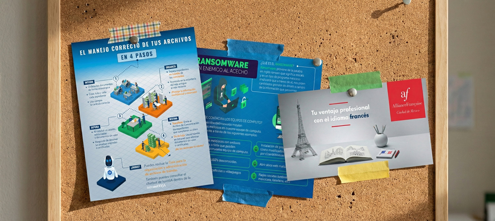

Comunicación Interna / Diseño Gráfico
Cultura y Conexión: El Lenguaje Visual de la Intranet

Misión: Humanizar la Institución
La intranet de una institución gubernamental suele ser percibida como un espacio frío y puramente administrativo. Mi reto fue transformar este canal en un **ecosistema visual vibrante** que no solo informara, sino que generara pertenencia.
Desde campañas críticas de ciberseguridad hasta la promoción de convenios de entretenimiento, cada pieza fue diseñada para romper el ruido digital y conectar con el lado humano de los servidores públicos.
Conciencia
Ciberseguridad
Prevención visual contra el Ransomware.Comunidad
Clima Laboral
Espacios de venta y entretenimiento diseñados para el empleado.Bienestar
Convenios
Difusión efectiva de beneficios y cultura.Conciencia y Seguridad Crítica
En una institución que maneja justicia, la información es el activo más valioso. Diseñé campañas visuales de alto impacto para temas de **Ransomware** y el **Manejo Correcto de Archivos**, transformando directrices técnicas en mensajes claros y memorables.
Convenios que Inspiran
La comunicación de beneficios (Alianza Francesa, La Europea, Bioparque Estrella) se alejó de lo genérico para adoptar un estilo aspiracional. El objetivo: que el trabajador sintiera que el TFJA se preocupa por su desarrollo personal y tiempo libre.
El Lado Humano de la Intranet
Desde la lúdica campaña de **Pingüinos para Capacitación** hasta la creación de comunidades de venta interna y secciones de entretenimiento, estas piezas construyeron puentes entre colegas, fortaleciendo el tejido social de la institución.